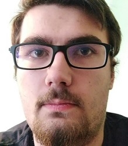
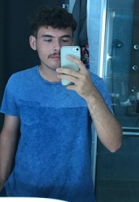

Augustin MARIE
âge : 20 ans
e-mail : a.marie189@laposte.net
Un peu plus sur moi :
Mon premier voyage remonte à mes 12 ans il m’a alors permit de voir des choses complètement différentes de ce que je connaissais et m’a émerveillé.
Depuis j’ai continué de faire des voyages en France et ailleurs, c’est cette passion pour la découverte qui m’a motivé à créé ce site.
Pierrick BAUFFE
âge : 18 ans
e-mail : pbauffe@gmail.com
Un peu plus sur moi :
Depuis tout petit j'aime beaucoup voyager dans divers pays et c'est une passion que j'aimerai partager avec tout le monde, c'est pourquoi je me suis lancé dans la création de site où je partagerai mes meilleurs voyages.
Thibault BALLEUX
âge : 18ans
e-mail : balleux02@icloud.com
Un peu plus sur moi :
J'ai eu la chance dès mon plus jeune de voyager dans de multiples destinations et la première dont je me rappelle était la Tunisie à mes 3 ans. Par la suite, j'ai eu la chance d'agrandir ma culture en découvrant plusieurs régions françaises mais également la Turquie, l'Angleterre, l'Espagne, la Slovénie ou encore Malte.